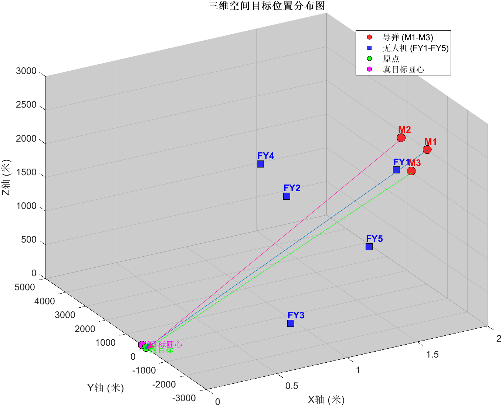

Mathematics · Optimization · AI4Math
罗凯锋
在数学的严谨与计算的效率之间，
寻找可验证的解。
华东师范大学数学科学学院，数学与应用数学拔尖计划本科生。关注优化、数学建模与形式化证明，喜欢把复杂问题拆解成清晰、可计算的结构。
SCROLL
我具备扎实的数理基础与逻辑分析能力，熟悉概率论、数值分析和 Python 编程，对优化方向保持着长期兴趣。
在课程学习之外，我持续接触 Lean 形式化证明系统与 AI 辅助数学证明，希望理解严谨推理如何与现代计算工具协同。面对新的研究问题，我习惯先明确假设、拆解约束，再寻找可复现的求解路径。
- 院校
- 华东师范大学
数学科学学院
- 方向
- 优化与数学建模
AI4Math
- 专业绩点
- 3.95 / 4.00
- 英语四级
- 644 分
常微分方程
近世代数
实变函数
数值分析
概率论
傅里叶分析
03 / 研究
一项关于时空协同
与覆盖优化的研究。

FIG. 01 · SPATIAL MODEL
数学建模研究 · 2025
基于末端覆盖的无人机投弹策略研究
围绕来袭目标的持续有效遮蔽，从单机单弹逐步扩展到多机多弹协同。研究将几何判据、时空匹配和投放调度统一到分层优化框架中，在复杂约束下寻找覆盖时间更长的策略。
几何判据
启发式搜索
黄金分割精化
大邻域搜索 LNS
26.9352 s
三机协同总遮蔽时长
5 × 3
多机多目标任务规模
阅读论文 PDF ↗
研究路径
- 01定义判据
用导弹—烟幕—目标之间的最小距离建立完全遮蔽条件。
- 02优化参数
联合搜索无人机航向、速度、投放时刻与引信延迟。
- 03协同覆盖
由单机多弹推广到多机多目标，协调前端补充与末端覆盖。
六册课程学习笔记，覆盖数学分析、代数与常微分方程。这里保留原始扫描版本，既记录结论，也记录推导发生的过程。
- 6
- 册笔记
- 246
- 页内容
EDUCATION
数学与应用数学拔尖计划
华东师范大学 · 数学科学学院
ACADEMIC
浙江大学 AI4Math 暑期学校
关注人工智能与数学证明自动化
MODELING
全国大学生数学建模竞赛
上海市二等奖
Scientific ComputingNumPy · Pandas · Matplotlib
Mathematics数值分析 · 概率论 · 优化
Writing & ProofLaTeX · Lean